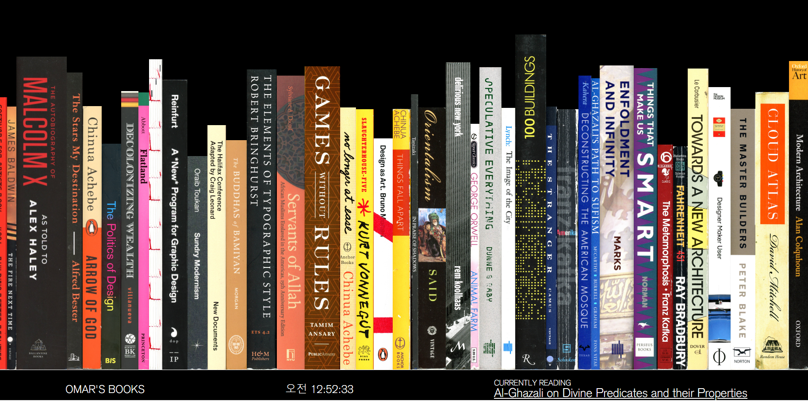
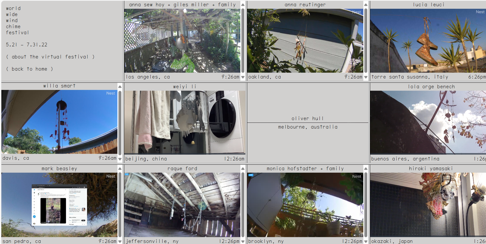
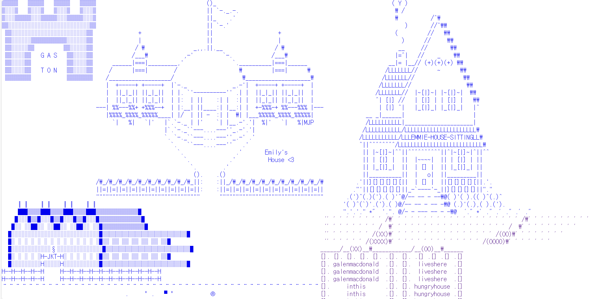

OMAR'S BOOKS
여러 개의 책들이 가로로 나열해 있는 웹사이트이다. 하나의 책에 마우스를 가져다 놓으면 책의 제목과 책의 저자가 큰 화면을 채운다. 검은색 배경에 대비를 주는 흰색 글자로 디자인하여 더욱 사용자의 눈에 잘 들어온다. 그리고 그 책에만 집중하게 만드는 효과가 있다. 책들이 가로로 나열해진 모습이 책꽂이에 꽂힌 책을 연상시킨다. 마치 사용자가 책꽂이에서 책을 고르는 듯한 느낌을 받는다. 오른쪽으로 화면을 이동하면 더 많은 책을 볼 수 있다. 모바일로 사이트에 접속했을 때는 세로 화면에 맞게 책들의 크기가 바뀐다. 사용자가 더 편리하게 웹사이트를 이용할 수 있다.
WORLD WIDE WIND CHIME FESTIVAL
실시간으로 창문을 통해 풍경을 볼 수 있는 웹사이트이다. 웹사이트를 접속하면 11개의 닫힌 화면이 보인다. 화면을 누르면 창문이 열리듯 실시간 영상이 위아래로 나타난다. 다시 화면을 누르게 되면 창문이 닫혀 사용자가 보고 싶은 화면만 열어 볼 수도 있다. 방 안, 창고 등 다양한 장소와 시점으로 영상이 재생한다. 전체적으로 창문을 연상시키는 개념과 디자인이 독특했다. 창문을 통해 전 세계의 풍경을 실시간으로 볼 수 있다는 점이 흥미로웠다. 멀리 떨어져 있지만 이 웹사이트를 통해 각각의 시간대에 어떤 일이 일어나는지 확인할 수 있다. 모바일로 접속을 하면 영상의 크기가 세로로 작아진다.
ASCII
특수기호들로 이루어진 웹사이트이다. 처음 시작 화면부터 다양한 형태의 특수 기호로 만든 집이 나온다. 집을 누르면 내부의 공간을 볼 수 있다. 화장실, 반려동물, 편지 등 집마다 색다른 내부를 볼 수 있는 재미가 있다. 또한 웹사이트를 새로고침하면 다른 집들이 나타난다. 특수기호로 만든 귀여운 디자인이 호감으로 다가왔다. 모바일로 웹사이트를 접속하면 특수기호의 크기가 작아진다. 집이 세로로 배치되면서 집의 형태가 더 잘 보인다. 특수기호를 이용해 만든 형태가 한눈에 알아보기 쉬운 것들이 다수였다. 하지만 소수의 몇 개는 무엇을 만들었는지 알아보기 어려웠다.